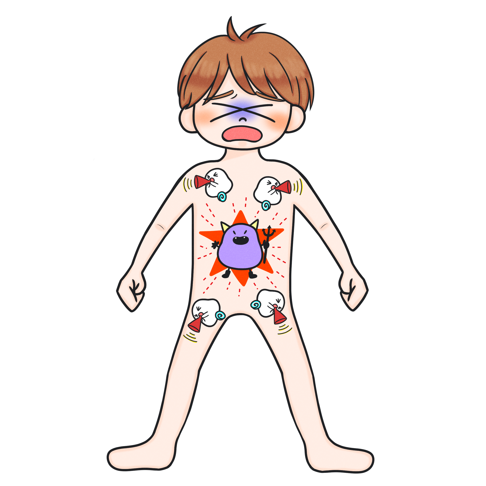
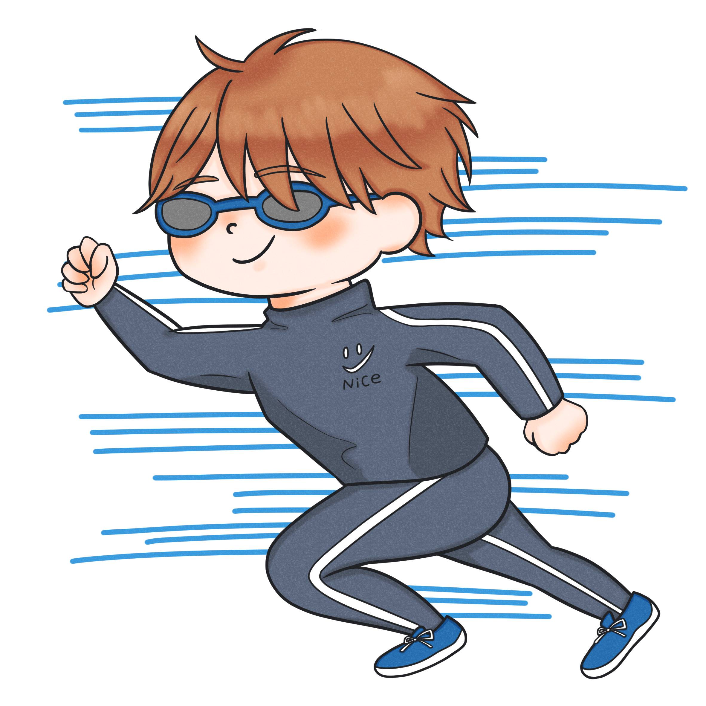

発熱の原因は感染だけではない！
〜侵襲に対する炎症反応〜
目標
- 炎症反応により発熱が生じるメカニズムを述べることができる
Summary
- 人間は侵襲を受けると炎症反応が生じる
- 発熱は炎症の結果、生じる”反応”である
炎症反応とは
侵襲に対する生体反応は色々ありますが、皆さんに必ずおさえてほしいのが炎症反応です。
炎症反応といえば、炎症の４兆候を習ったかと思います。
- 発赤
- 腫脹
- 熱感
- 疼痛
でしたね。
例えば熱いフライパンに誤って触れたりすると、指に炎症反応が起きますよね。つまり、侵襲を受けると人は炎症反応を起こします。
では皆さん、風邪をひいたとき、体温ってどうなりますか？
発熱しますよね。熱が出ると、全身の関節が痛くなった経験があるかと思います。

サイトカイン
先ほどの火傷の例と感染した場合の例では、何が異なるでしょうか？
火傷は局所（火傷の例えだと指だけ）、風邪をひいたの場合は全身で炎症反応が起こっていますね。
ではなぜ感染の場合、全身で炎症反応が起こるのでしょうか？
それは「サイトカイン」という情報伝達物質を介して、「侵襲を受けたぞ！」という情報を全身に伝えるんですね。
軽い熱傷程度の侵襲であれば全身で炎症反応は起きません。
皆さんがこれから学ぶ内容は、侵襲を受けた結果、全身で炎症反応が生じてしまう場合です。

では人は、なぜ侵襲を受けると発熱するのでしょうか？
皆さん、ここでイメージしてください。
真冬の朝いちに走った50m走と、十分にウォーミングアップして身体が温まった状態で走った50mタイムだとどちらが早いですか？
もちろん十分にウォーミングアップして身体が温まった状態で走った方が早いですよね。

では身体の免疫、つまり生体防御を司る血球成分はなんでしたっけ？
白血球ですね。
この白血球も同じで、やはり暖かい環境の方が、機能が高まるんですね。
だから人間は感染や手術といった侵襲を受けて炎症反応が起きると、まず体内の設定温度（セットポイント）を上げます。
「セットポイント」という言葉、聞き慣れない人もいるでしょうか。
セットポイントというのは、人間の体温の設定温度を指します。
わかりやすくいうと、エアコンと同じです。
冬は寒いので、部屋を38℃に設定する人もいるかもしれません。
設定温度を38℃にすると、室温が38℃になるようにエアコンは部屋を温めようとしますよね。
その結果、少し時間が経つと部屋の”実際の”温度も38℃になりますよね。
つまりセットポイントによって、実際の温度が決められる、というわけですね。
セットポイントというのは、エアコンの設定温度と同じと考えてください。
人間のセットポイントは、普段は脳の視床下部でコントロールされています。
「体温を調整している場所」ということで、「体温調節中枢」と呼ばれます。
通常は37.0℃前後でコントロールされています（この体温が最も体内の酵素が活性化しやすいと言われています）。
「私はそんなに体温が高くないよ！」という方もいるかもしれません。
この体温は身体の中心部分（血液や臓器など）のことを指します。
皆さんは、普段は腋窩で体温測定しますよね？
これは体の表面の温度となるので、少し下がって36.0℃程度となります。
寒い冬の朝、まず部屋の暖房をつける人も多いと思います。
ですが、暖房の電源を入れたからといって、いきなり設定温度まで室温は上がりませんよね。

温まるまでの間、少し時間があるわけです。部屋の中が寒いと身体がふるえてきますよね。

これを侵襲を受けた後（例えば手術を終えた直後の患者さん）に置き換えてみましょう。
このようなイメージです。

侵襲を受けた場合は、「白血球の機能を高めるために、セットポイントが上がっている」という点が異なりますが、体温を上げるプロセスは、寒い冬の朝と同じです。
ちなみに侵襲に対して身体がしっかり対応して、炎症反応が落ち着いてくれば、セットポイントが元の設定に戻リます。

すると、今度は逆に実際の体温がセットポイントより高い状態なので、体温を下げようと身体は血管を拡張させ、発汗したりする、といった反応が起こります。

人間の身体はよくできていますね。
皆さんがこれから学んでいくのは、全身で炎症反応が生じると、人の身体はどのように変化するのか？ということです。
発熱だけでなく、様々な変化が起きるので、次回以降でまた学んでいきましょう。
ではここまで学んだことが理解できているかどうか、テストしてみましょう。
テストはどうでしたか？
テストにクリアできたら、次の第3章に進みましょう！